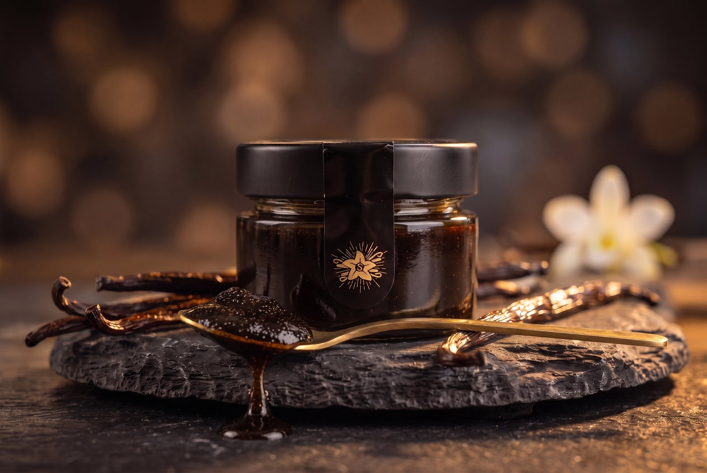
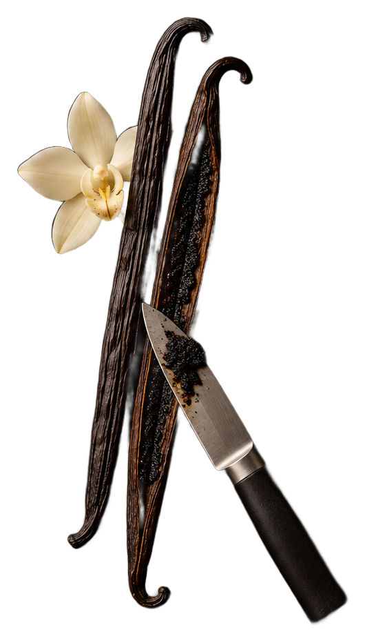

★★★★★
„Ein halber Teelöffel reicht für ein ganzes Blech — so intensiv war noch keine Vanille bei mir.“
SM
Sarah M.✓ Verifizierter Kauf

100 g · ohne Alkohol · auch für Kinder
Ein Teelöffel ersetzt eine ganze Schote: Die samtige Paste bringt volles, echtes Vanille-Aroma in Cremes, Glacé, Teige und Kaffee — ganz ohne künstliche Aromen.


Unabhängig gemessen: bis zu 2,63 % Vanillin — rund doppelt so viel wie der Branchenschnitt von 1,4 %. Handverlesen und in unserer Manufaktur in Schlieren veredelt.

Ein kleiner Auszug aus den Rückmeldungen unserer Kund:innen.
„Ein halber Teelöffel reicht für ein ganzes Blech — so intensiv war noch keine Vanille bei mir.“
„Wir nutzen die Paste in unserer Patisserie täglich. Das Aroma ist unvergleichlich sauber.“
„Endlich echte Vanille ohne künstliche Aromen. Man schmeckt den Unterschied sofort.“